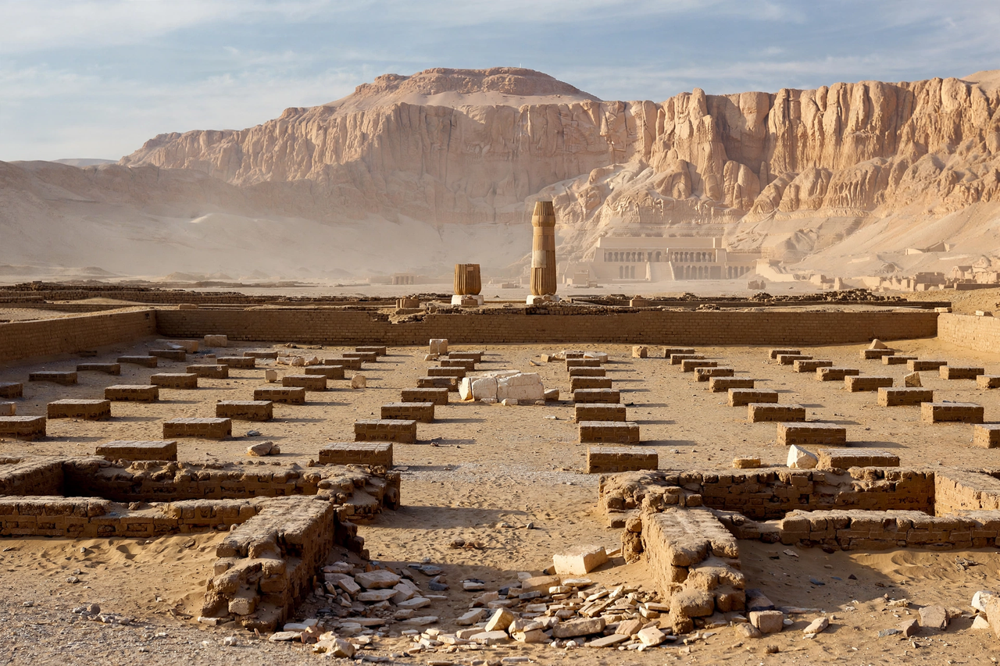

Amarna

Amarna (Arabic: العمارنة) is an extensive Egyptian archaeological site in Minya Governorate that represents the remains of the capital city newly established in 1346 BC by the Pharaoh Akhenaten and abandoned shortly after his death in 1332 BC. The city was named Akhetaten, "Horizon of the Aten".
The city
Founded on virgin ground on the east bank of the Nile, about 300 km south of Cairo, Akhetaten was laid out along a Royal Road with palaces, the Great and Small Aten Temples — open-air sanctuaries quite unlike the dark halls of Amun — government offices, suburbs of houses and workshops, and a workmen's village. Its boundaries were proclaimed on a series of stelae carved into the surrounding cliffs. Population estimates range from 20,000 to 50,000. Here the revolutionary art style of the Amarna period — elongated bodies, intimate royal family scenes — flourished, and here the sculptor Thutmose's workshop produced the bust of Nefertiti.
Amarna Letters
In 1887 a local woman found a cache of over 300 cuneiform tablets, the Amarna Letters: the diplomatic correspondence of Akhenaten and his father Amenhotep III with the kings of Babylon, Assyria, Mitanni and the Hittites, and with vassal rulers in Canaan and Syria. Written in Akkadian, the diplomatic language of the age, they are a principal source for the international politics of the Late Bronze Age.
Abandonment and excavation
Within a few years of Akhenaten's death the court of Tutankhamun returned to Thebes; the city was abandoned, its temples later dismantled for building stone. Because it was occupied for barely fifteen years and never substantially rebuilt, Amarna preserves the plan of an Egyptian city better than any other site. Excavations by Flinders Petrie, Ludwig Borchardt and, since 1977, Barry Kemp's expedition have made it one of the most intensively studied settlements of the ancient world.